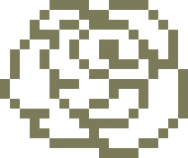

Rose

Electronics
Electronics & software manufacturers
Ponieważ czasem odwagę,
inspirację i progres
odnajdziemy
w przeszłości
inspirację i progres
odnajdziemy
w przeszłości
Nasza działalność
|
W Rose Electronics nasza idea jest podtrzymywanie oryginalnosci oraz
kreatywnosci w elektronice codziennego uzytku. Jestesmy mlodymi entuzjastami oraz tworcami nowoczesnej elektroniki w retro oprawie. Posiadamy skromne biuro, ktore jest wyposazone w drukarki 3D oraz grupe zdolnych ludzi. Specjalizujemy sie w elektronice codziennego uzytku oraz komputerami. Kultywujemy rozwiazania z przed lat, ktore nie baly sie o odwazny design oraz eksperymentalne elementy w fizycznej konstrukcji urzadzenia. |
Portfolio
W nazszym portfolio znajduja sie rozne rekreacje, kreacje, modele oraz prototypy
przedmiotow, ktore chcemy zeby kiedys trafily do mainstreamu. W kazdy projekt wkladamy
pasje i nasze serca.
 Mac SE z
Mac SE zRaspberry PI
Mini komputer z funkcja drukowania
Klawiatura
